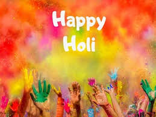

Holi Holi is known as the festival of colours. It is one of the most important festivals in India. Holi is celebrated each year with zeal and enthusiasm in the month of March by followers of the Hindu religion. Those who celebrate this festival, wait for it every year eagerly to play with colours and have delectable dishes. Holi is about celebrating happiness with friends and family. People forget their troubles and indulge in this festival to celebrate brotherhood. In other words, we forget our enmities and get into the festival spirit. Holi is called the festival of colours because people play with colours and apply them to each other’s faces to get coloured in the essence of the festival. The Hindu religion believes there was a devil king named Hiranyakashyap long ago. He had a son named Prahlad and a sister called Holika. It is believed that the devil king had blessings of Lord Brahma. This blessing meant no man, animal or weapon could kill him. This blessing turned into a curse for him as he became very arrogant. He ordered his kingdom to worship him instead of God, not sparing his own son.Following this, all the people began worshipping him except for his son, Prahlad. Prahlad refused to worship his father instead of God as he was a true believer of Lord Vishnu. Upon seeing his disobedience, the devil king planned with his sister to kill Prahlad. He made her sit in the fire with his son on the lap, where Holika got burned and Prahlad came out safe. This indicated he was protected by his Lord because of his devotion. Thus, people started celebrating Holi as the victory of good over evil. People celebrate Holi with utmost fervour and enthusiasm, especially in North India. One day before Holi, people conduct a ritual called Holika Dahan. In this ritual, people pile heaps of wood in public areas to burn. It symbolizes the burning of evil powers revising the story of Holika and King Hiranyakashyap. Furthermore, they gather around the Holika to seek blessings and offer their devotion to God. The next day is probably the most colourful day in India. People get up in the morning and offer pooja to God. Then, they dress up in white clothes and play with colours. They splash water on one another. Children run around splashing water colours using water guns. Similarly, even the adults become children on this day. They rub colour on each others faces and immerse themselves in water. In the evening, they bathe and dress up nicely to visit their friends and family. They dance throughout the day and drink a special drink called the bhaang. People of all ages relish holis special delicacy gujiya ardently. In short, Holi spreads love and brotherhood. It brings harmony and happiness in the country. Holi symbolizes the triumph of good over evil. This colourful festival unites people and removes all sorts of negativity from life.